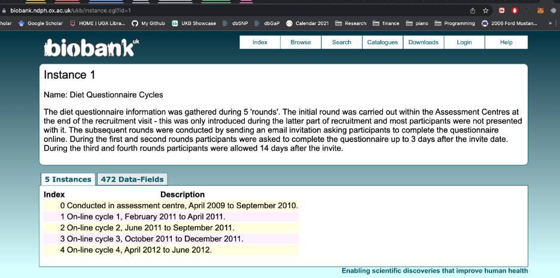
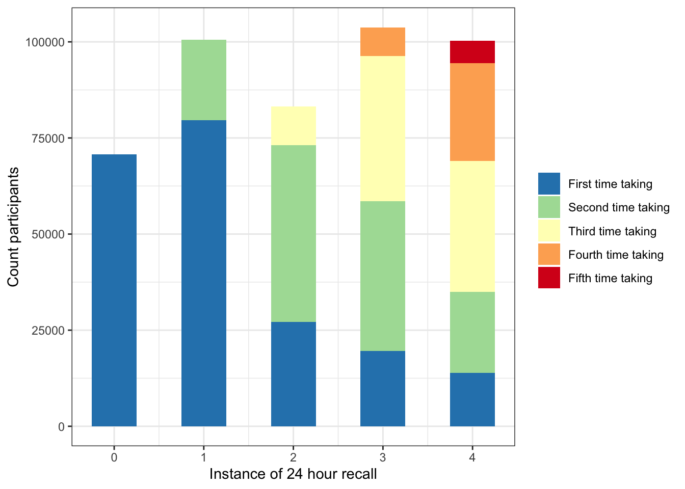
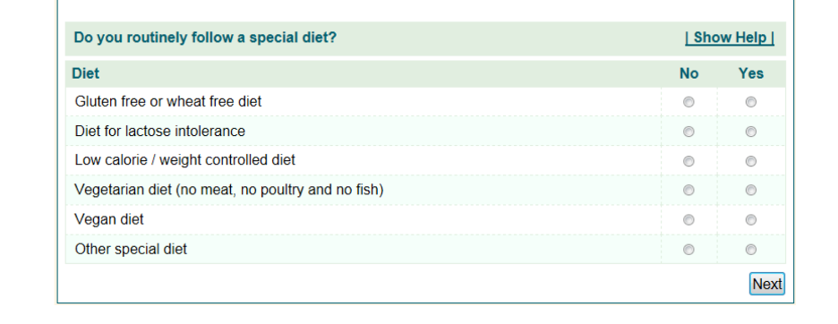
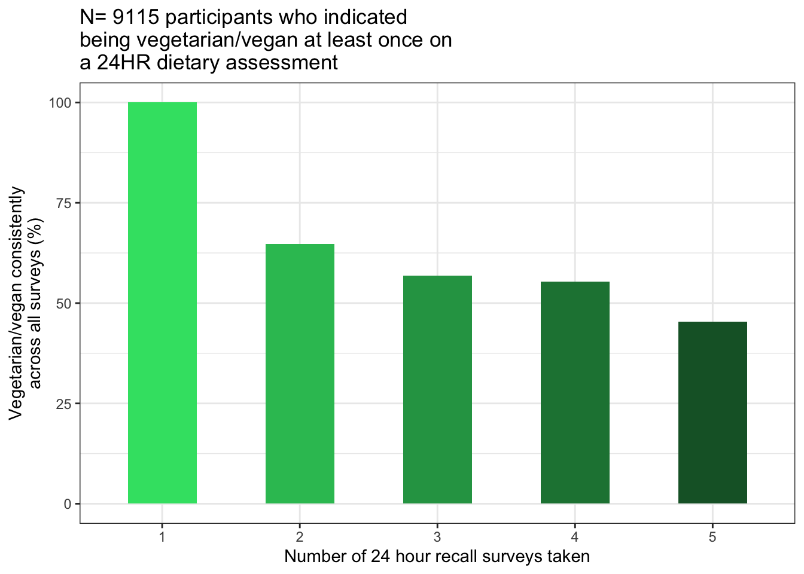
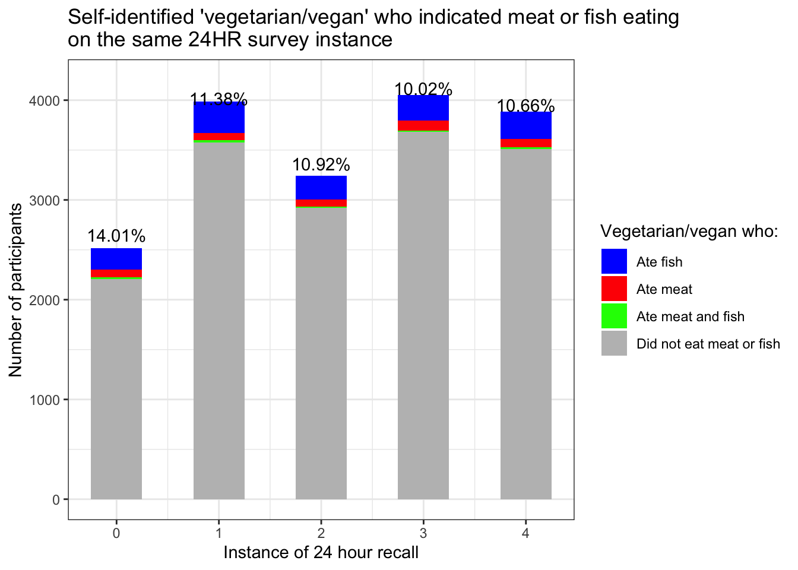

Define Vegetarians
Mike Francis
- Defining
“high quality” vegetarians for use in this analysis
- Purpose of this script:
- Load data
- Identify instances where 24 hour dietary recall (24HR) was taken by participants. Possible instances are 0 through 4.
- Plot: How many times did participants take 24HR surveys
- Plot: How many repeat participants were in each instance of the 24HR?
- Continue with veg definitions: start a new dataframe called “new” and add Age and Sex columns
- Add dietary change column
- Check meat and fish eater fields of initial assessment (IA).
- Special diet column in 24HR where participants self-identified as vegetarian/vegan
- Plot: Percent consistent vegetarians vs number of recall survey’s taken across 3 years
- Identify those who were vegetarian at just first 24HR they took
- Identify those who were vegetarian at two consecutive 24HR instances
- Identify those who ate meat or fish in the 24HR
- Plot: those who indicated being a vegetarian/vegan and also indicated meat or fish eating on that same survey
- Create new vegetarian columns
- Table: reason self-identified vegetarian was disqualified from study
- Write output files.
Defining “high quality” vegetarians for use in this analysis
Purpose of this script:
Find the self-identified vegetarians in the UK Biobank dietary recall survey instances
Assess their consistency with other parts of the dietary survey.
Obtain a list of high quality vegetarians to use for subsequent analyses.
Veg5yr1 is the vegetarian variable used in the main analysis. This means:
Indicated no major dietary changes over past 5 years
No meat eating on initial assessment (IA)
Self-identified as a vegetarian or vegan the first time they were asked on a 24HR survey
Didn’t indicate eating any meat or fish on that same first 24HR survey they took
The biomarker data that we use in this analysis was taken at the IA. Therefore this is a combination of several columns that describe the quality of vegetarianism at that same time point.
There are also some plots here showing general qualities of the 24HR recall survey that were done in my data exploration that don’t factor into the main analysis (i.e., Plot: How many repeat participants were in each instance of the 24HR? , Plot: Percent consistent vegetarians vs number of recall survey’s taken across 3 years, [Identify those who were vegetarian at two consecutive 24HR instances])
Load data
Load packages + special functions
suppressMessages(silent <- lapply(
c("plyr", "dplyr", "tidyverse", "data.table", "vroom", "knitr","kableExtra"),
library, character.only=T))
table = function (..., useNA = 'always') base::table(..., useNA = useNA)
mutate_when <- function(data, ...) {
dots <- eval(substitute(alist(...)))
for (i in seq(1, length(dots), by = 2)) {
condition <- eval(dots[[i]], envir = data)
mutations <- eval(dots[[i + 1]],
envir = data[condition, , drop = FALSE])
data[condition, names(mutations)] <- mutations
}
data
}Load UK Biobank dataset
bd=vroom("/Users/mike/Documents/R_files/UKBpheno/pheno/ukb34137.tab", delim="\t", show_col_types = FALSE)
bd=as_tibble(bd)
source("src/components/ukb34137_factordata.R") #file provided by UKB "ukb34137_loaddata.R" without the loading part, to label the responses in survey questions
dim(bd)## [1] 502527 5172#knitr::knit_exit()bd=vroom("/Users/mike/Documents/R_files/UKBpheno/pheno/ukbXXXXX.tab", delim="\t", show_col_types = FALSE)
bd=as_tibble(bd)
source("src/components/ukbXXXXX_factordata.R") #file provided by UKB "ukbXXXXX_loaddata.R" without the loading part, to label the responses in survey questions
dim(bd)Identify instances where 24 hour dietary recall (24HR) was taken by participants. Possible instances are 0 through 4.
“daycols” are days of the week that the 24HR was taken, i.e. a proxy for whether the survey was completed. In these columns, NA=survey wasn’t taken that instance.
We change the days of the week to 1 because we’re not interested in which day it actually was.
daycols<-c("f.20080.0.0", "f.20080.1.0", "f.20080.2.0",
"f.20080.3.0", "f.20080.4.0")
bd1<-bd[,c("f.eid", daycols)]
#Change all the factors to characters
bd1[,daycols]<-sapply(bd1[,daycols], as.character)
#Change NA's to zeros and days to 1's
bd1[,daycols][(is.na(bd1[,daycols]))]<-"0"
bd1[,daycols][bd1[,daycols]!="0"] <-"1"
#Change these back to numeric
bd1[,daycols]<-sapply(bd1[,daycols], as.integer)
#Now make a new column, everyone with rowSums zero never took recall
#and those with >0 took it at least once
bd1$times_taken_24HR<-rowSums(bd1[,daycols])
bd1$ever_took_24HR<-0
bd1$ever_took_24HR[bd1$times_taken_24HR>0]<-1
bd1$times_taken_24HR[bd1$times_taken_24HR==0]<-NA
sum(bd1$ever_took_24HR) #[1] 211018## [1] 211018#TP = time point
colnames(bd1)<-c("IID", "RecallTP0", "RecallTP1",
"RecallTP2","RecallTP3","RecallTP4",
"times_taken_24HR", "ever_took_24HR")
#Optional save here
#write.csv(bd1, "UKB_24hourRecall-ParticipantInstancesTaken.csv", quote=F, row.names=F)During what time periods did the questionnaire cycles occur?

Plot: How many times did participants take 24HR surveys
print("How many participants in each 24HR instance?")## [1] "How many participants in each 24HR instance?"perinstance=bd1%>%select(RecallTP0:RecallTP4)
colSums(perinstance)## RecallTP0 RecallTP1 RecallTP2 RecallTP3 RecallTP4
## 70714 100598 83265 103790 100247print("How many times did participants take 24HR surveys?")## [1] "How many times did participants take 24HR surveys?"table(bd1$times_taken_24HR)##
## 1 2 3 4 5 <NA>
## 84166 48119 42488 30479 5766 291509timestaken<-bd1%>%select(times_taken_24HR)%>%
group_by(times_taken_24HR)%>%summarise(N=n())
ggplot(data=timestaken, aes(x=times_taken_24HR, y=N)) +
geom_bar(stat="identity", width=0.5)+
ylab("Number of participants")+
xlab("Number of times taken 24 hour recall")+
ggtitle(paste("N=", sum(timestaken$N[1:5]), sep=""))+
theme_bw()## Warning: Removed 1 rows containing missing values (position_stack).
Plot: How many repeat participants were in each instance of the 24HR?
take=bd1[paste("RecallTP", 0:4, sep="")]
take=take[!rowSums(take)==0,]
take.plot=take%>%
gather(key = v, value = total, RecallTP0:RecallTP4, na.rm = T)%>%
group_by(v)%>%count(total)%>%filter(total==1)
colnames(take.plot)=c("RecallTP", "Group", "n")
take.plot$RecallTP=0:4
as_tibble(take.plot)## # A tibble: 5 × 3
## RecallTP Group n
## <int> <int> <int>
## 1 0 1 70714
## 2 1 1 100598
## 3 2 1 83265
## 4 3 1 103790
## 5 4 1 100247This next script chunk is incredibly repetitive and I’m sure there is a function for it but it was faster for me to do it “manually”.
rep=paste("repeat", 0:4, sep="")
take[rep]=0
take[rep[1]]=0
nrow(take[!rowSums(take)==0,])## [1] 211018#TP1, previously took once
take$repeat1[take$RecallTP0==1 &
take$RecallTP1==1] = 1
#TP2, previously took at least once
take$repeat2[(take$RecallTP0==1 |
take$RecallTP1==1) &
take$RecallTP2==1] = 1
#TP2, previously took twice
take$repeat2[(take$RecallTP0==1 &
take$RecallTP1==1) &
take$RecallTP2==1] = 2
#TP3, previously took at least once
take$repeat3[(take$RecallTP0==1 |
take$RecallTP1==1|
take$RecallTP2==1) &
take$RecallTP3==1] = 1
#TP3, previously took at least twice
take$repeat3[(
(take$RecallTP0==1 & take$RecallTP1==1) |
(take$RecallTP1==1 & take$RecallTP2==1) |
(take$RecallTP0==1 & take$RecallTP2==1)
) & take$RecallTP3==1] = 2
#TP3, previously took three times
take$repeat3[(
take$RecallTP0==1 &
take$RecallTP1==1 &
take$RecallTP2==1 &
take$RecallTP3==1) ] = 3
#TP4, previously took at least once
take$repeat4[(take$RecallTP0==1 |
take$RecallTP1==1|
take$RecallTP2==1|
take$RecallTP3==1) &
take$RecallTP4==1] = 1
#TP4, previously took at least twice
take$repeat4[(
(take$RecallTP0==1 & take$RecallTP1==1) |
(take$RecallTP0==1 & take$RecallTP2==1) |
(take$RecallTP0==1 & take$RecallTP3==1) |
(take$RecallTP1==1 & take$RecallTP2==1) |
(take$RecallTP1==1 & take$RecallTP3==1) |
(take$RecallTP2==1 & take$RecallTP3==1)
) & take$RecallTP4==1] = 2
#TP4, previously took at least three times
take$repeat4[(
(take$RecallTP0==1 & take$RecallTP1==1 & take$RecallTP2==1) |
(take$RecallTP0==1 & take$RecallTP2==1 & take$RecallTP3==1) |
(take$RecallTP1==1 & take$RecallTP2==1 & take$RecallTP3==1)
) & take$RecallTP4==1] = 3
#TP4, previously took four times
take$repeat4[
take$RecallTP0==1 & take$RecallTP1==1
& take$RecallTP2==1 & take$RecallTP3==1
& take$RecallTP4==1] = 4
take$repeat0[take$RecallTP0==0]=NA
take$repeat1[take$RecallTP1==0]=NA
take$repeat2[take$RecallTP2==0]=NA
take$repeat3[take$RecallTP3==0]=NA
take$repeat4[take$RecallTP4==0]=NA
print("Count repeats at each instance")## [1] "Count repeats at each instance"sapply(take, table)[6:10]## $repeat0
##
## 0 <NA>
## 70714 140304
##
## $repeat1
##
## 0 1 <NA>
## 79613 20985 110420
##
## $repeat2
##
## 0 1 2 <NA>
## 27113 46018 10134 127753
##
## $repeat3
##
## 0 1 2 3 <NA>
## 19643 38864 37776 7507 107228
##
## $repeat4
##
## 0 1 2 3 4 <NA>
## 13935 20985 34129 25432 5766 110771take.plot=data.frame(0:4, sapply(take, sum)[1:5], row.names = NULL)
colnames(take.plot)=c("RecallTP", "N")
y=data.frame()
for (i in 0:4){
x=take%>%group_by_(paste("RecallTP", i,sep=""), paste("repeat",i,sep=""))%>%
summarise(count=n())%>%
rename_("RecallTP" = paste("RecallTP", i,sep=""))%>%
rename_("group" = paste("repeat", i,sep=""))
x=x[x$RecallTP==1,]
x$RecallTP=i
y=rbind(y,x)
}## `summarise()` has grouped output by 'RecallTP0'. You can override using the
## `.groups` argument.
## `summarise()` has grouped output by 'RecallTP1'. You can override using the
## `.groups` argument.
## `summarise()` has grouped output by 'RecallTP2'. You can override using the
## `.groups` argument.
## `summarise()` has grouped output by 'RecallTP3'. You can override using the
## `.groups` argument.
## `summarise()` has grouped output by 'RecallTP4'. You can override using the
## `.groups` argument.y$group=mapvalues(y$group, from=c(0,1,2,3,4),
to=c("First time taking",
"Second time taking",
"Third time taking",
"Fourth time taking",
"Fifth time taking"))
y$group=factor(y$group,
levels =rev(unique(y$group)))
ggplot(data=y, aes(x=RecallTP, y=count, fill=group)) +
geom_bar(stat="identity", width=0.5)+
ylab("Count participants")+
xlab("Instance of 24 hour recall")+
theme_bw()+
guides(fill = guide_legend(reverse = TRUE))+
theme(legend.title=element_blank())
Continue with veg definitions: start a new dataframe called “new” and add Age and Sex columns
new<-bd1
#PUT AGE AND SEX COLUMNS
agesex<-bd%>%select(f.eid, f.21003.0.0, f.31.0.0)
colnames(agesex)<-c("IID", "Age", "Sex")
new<-left_join(new,agesex)%>%select(IID, Age, Sex, everything())## Joining, by = "IID"Add dietary change column
f.1538 = “Have you made any major changes to your diet in the last 5 years?”
0 = “No”
1= “Yes, because of illness | Yes, because of other reasons | Prefer not to answer”
changevar=bd%>%select(f.eid, f.1538.0.0)
colnames(changevar)=c("IID", "DietChanges5yr")
changevar[2]<-sapply(changevar[2], mapvalues,
c("Prefer not to answer",
"Yes, because of illness", "Yes, because of other reasons",
"No"),
c(1,1,1,0))
table(changevar$DietChanges5yr)##
## 0 1 <NA>
## 303495 198135 897new=left_join(new,changevar)## Joining, by = "IID"Check meat and fish eater fields of initial assessment (IA).
#Category 100052: Diet. Initial assessment
IAcols<-c("f.1329.0.0", "f.1339.0.0",
"f.1349.0.0", "f.1359.0.0",
"f.1369.0.0", "f.1379.0.0",
"f.1389.0.0")
names(IAcols)<-c("IAOilyfish", "IANonoilyfish",
"IAProcessedmeat","IAPoultry",
"IABeef","IALamb",
"IAPork")
IAcols.new<-as_tibble(sapply(bd[IAcols], as.character))
colnames(IAcols.new)<-names(IAcols)
IAcols.new$IAveg<-rowSums(bd[IAcols]=="Never")==7
sum(IAcols.new$IAveg,na.rm=TRUE)## [1] 9129#[1] 9129
IAcols.new$IID<-bd$f.eid
new<-left_join(new, IAcols.new)## Joining, by = "IID"Add the column “Age when last ate meat”
# IA Age when last ate meat/"Never eaten meat" -----------------------
#https://biobank.ndph.ox.ac.uk/ukb/field.cgi?id=3680
#"How old were you when you last ate any kind of meat?
#(Enter "0" if you have never eaten meat in your lifetime)"
#on the initial assessment
IA.ageLastAteMeat<-bd%>%select(f.eid, f.3680.0.0)
colnames(IA.ageLastAteMeat)<-c("IID", "IAageLastAteMeat")
new<-left_join(new, IA.ageLastAteMeat)## Joining, by = "IID"nrow(new%>%filter(ever_took_24HR==1 & IAveg==TRUE))## [1] 4749#[1] 4749Special diet column in 24HR where participants self-identified as vegetarian/vegan
This next section solves the problem that if someone has an NA in field 20086 (24hr-recall: special diet followed), it could mean two possible things:
They did not answer this question in the affirmative or
They didn’t take the 24h recall in that instance,
since it is marked as NA in both of these situations. (I.e. there is no “I didn’t follow a special diet” response in UKB Data-Coding 76).
Therefore response in this column was compared to the column indicating whether they took the survey in that instance to get that information.1
The question on the survey:

Special<-c("f.eid", "f.20086.0.0", "f.20086.1.0",
"f.20086.2.0", "f.20086.3.0", "f.20086.4.0")
names(Special)<- c("IID", "SpecialVeg0","SpecialVeg1", "SpecialVeg2",
"SpecialVeg3", "SpecialVeg4")
Special.cols<-as_tibble(sapply(bd[Special], as.character))
colnames(Special.cols)<-names(Special)Vegetarian = 1 ; Vegan = 1 all others and NA get 0 here, Will switch “true NAs” who didn’t take the survey at this instance back to NA in next step
Special.veg=Special.cols
Special.veg[2:6]<-sapply(Special.cols[2:6], mapvalues,
c(NA, "Low calorie", "Gluten-free",
"Lactose-free", "Other",
"Vegetarian", "Vegan"),
c(0,0,0,0,0,1,1))
Special.veg<-as_tibble(sapply(Special.veg, as.numeric))
new<-left_join(new, Special.veg)## Joining, by = "IID"Switch those zeros in Special Veg columns back to NAs for those who didn’t take survey at that instance
for (i in 0:4){
new[paste("SpecialVeg", i, sep="")][
new[paste("RecallTP", i, sep="")]==0
]=NA
}Make separate column indicating self-identified vegans
Special.vegan<-Special.cols
Special.vegan[2:6]<-sapply(Special.cols[2:6], mapvalues,
c(NA, "Low calorie", "Gluten-free",
"Lactose-free", "Other",
"Vegetarian", "Vegan"),
c(0,0,0,0,0,0,1))
colnames(Special.vegan)=c("IID", "SpecialVegan0","SpecialVegan1",
"SpecialVegan2",
"SpecialVegan3", "SpecialVegan4")
Special.vegan<-as_tibble(sapply(Special.vegan, as.numeric))
new<-left_join(new, Special.vegan)## Joining, by = "IID"#Switch those zeros in Special Veg columns back to NAs
#for those who didn't take survey at that instance
for (i in 0:4){
new[paste("SpecialVegan", i, sep="")][
new[paste("RecallTP", i, sep="")]==0
]=NA
}Make column: SpecialAlwaysVeg for those special diet who #answered vegetarian / vegan every time.
If the whole row is NA, put an NA in this column (AKA didn’t ever take 24HR).
new$SpecialTimesVeg=ifelse(
apply(
is.na(new[paste("SpecialVeg", 0:4, sep="")]),1,all),NA,
rowSums(new[paste("SpecialVeg", 0:4, sep="")], na.rm = T
))
#Proportion of times taken 24HR that answered vegetarian
new$SpecialPropVeg=
new$SpecialTimesVeg/new$times_taken_24HRPlot: Percent consistent vegetarians vs number of recall survey’s taken across 3 years
Tracking the percentage of participants who self-identified as vegetarian every time they took the 24HR (100% of responses were vegetarian/vegan) versus the number of times the recall was taken by said participants
times<-new%>%select(times_taken_24HR, SpecialTimesVeg)%>%
filter(complete.cases(.), SpecialTimesVeg>0)
sapply(times, table)## times_taken_24HR SpecialTimesVeg
## 1 2539 4152
## 2 1876 1789
## 3 1973 1340
## 4 1547 848
## 5 346 152
## <NA> 0 0times%>%filter(times_taken_24HR>=2, SpecialTimesVeg>=2)## # A tibble: 4,129 × 2
## times_taken_24HR SpecialTimesVeg
## <dbl> <dbl>
## 1 2 2
## 2 3 3
## 3 4 4
## 4 3 3
## 5 5 4
## 6 3 3
## 7 2 2
## 8 4 3
## 9 2 2
## 10 3 3
## # … with 4,119 more rowstimes.res<-matrix(data=NA, nrow=5, ncol=4)
for (i in 1:5){
times.res[i,1]<-i
times.res[i,2]<-nrow(times%>%filter(times_taken_24HR==i))
times.res[i,3]<-nrow(times%>%filter(SpecialTimesVeg==i,
times_taken_24HR==i))
times.res[i,4]<-(times.res[i,3]/times.res[i,2])*100
}
colnames(times.res)<-c("Times24HR",
"N took 24HR this many times and said vegetarian at least once on a survey",
"N who took 24HR this many times said Veg in every 24HR they took",
"PercentVeg")
(times.res<-as.data.frame(times.res))## Times24HR
## 1 1
## 2 2
## 3 3
## 4 4
## 5 5
## N took 24HR this many times and said vegetarian at least once on a survey
## 1 2539
## 2 1876
## 3 1973
## 4 1547
## 5 346
## N who took 24HR this many times said Veg in every 24HR they took PercentVeg
## 1 2539 100.00000
## 2 1182 63.00640
## 3 1071 54.28282
## 4 794 51.32515
## 5 152 43.93064times.res$Times24HR<-as.factor(times.res$Times24HR)
ggplot(data=times.res, aes(x=Times24HR,
y=PercentVeg))+
geom_bar(stat="identity", width=0.5, fill ="#36E072")+
ggtitle("N=8281 participants who indicated
being vegetarian/vegan at least once on
a 24HR dietary assessment")+
xlab("Times a participant took a 24HR survey
between April 2009 and June 2012")+
ylab("% participants who indicated
Vegetarian/Vegan
on all recalls taken")+
theme_bw()
Identify those who were vegetarian at just first 24HR they took
(First 24HR is called “next” in the script, as in next after the initial assessment).
specialVeg=new%>%select(SpecialVeg0:SpecialVeg4)
#Find positions of all NA's
NonNAindex=apply(specialVeg, 1,FUN = function(x) which(!is.na(x)),
simplify = T)
#Take first non-NA value
specialVeg$NonNAindex1=sapply(NonNAindex,"[",1)
specialVeg$nextSpecialVeg=0
for (i in 1:nrow(specialVeg)){
if(!is.na(specialVeg$NonNAindex1[i])){
#If the first non-NA special Veg = 1, set this to 1
if (specialVeg[i, specialVeg$NonNAindex1[i]]==1)
{specialVeg$nextSpecialVeg[i]=1}
#else set to zero
else {specialVeg$nextSpecialVeg[i]=0}
}
#Else set to NA
else{specialVeg$nextSpecialVeg[i]=NA}
}
#Add to main table
new$nextSpecialVeg=specialVeg$nextSpecialVegIdentify those who were vegetarian at two consecutive 24HR instances2
I didn’t end up using this in the main analysis but it was good to know.
Identify those who ate meat or fish in the 24HR
#Category 100106: Meat/fish yesterday. 24HR.
Meatfish24<-bd%>%select(f.103000.0.0, f.103000.1.0, f.103000.2.0,
f.103000.3.0, f.103000.4.0,
f.103140.0.0, f.103140.1.0, f.103140.2.0,
f.103140.3.0, f.103140.4.0)
colnames(Meatfish24)<-c("Meat0", "Meat1","Meat2",
"Meat3","Meat4",
"Fish0","Fish1","Fish2",
"Fish3","Fish4")
Meatfish24<-as_tibble(sapply(Meatfish24,
mapvalues, c("No", "Yes"), c(0, 1)))
Meatfish24<-as_tibble(sapply(Meatfish24, as.numeric))
Meatfish24## # A tibble: 502,527 × 10
## Meat0 Meat1 Meat2 Meat3 Meat4 Fish0 Fish1 Fish2 Fish3 Fish4
## <dbl> <dbl> <dbl> <dbl> <dbl> <dbl> <dbl> <dbl> <dbl> <dbl>
## 1 NA NA NA NA NA NA NA NA NA NA
## 2 NA NA NA NA NA NA NA NA NA NA
## 3 0 NA NA NA NA 0 NA NA NA NA
## 4 NA NA NA NA NA NA NA NA NA NA
## 5 NA NA NA 1 1 NA NA NA 1 0
## 6 NA 0 1 NA 1 NA 0 0 NA 0
## 7 NA NA 0 NA NA NA NA 0 NA NA
## 8 NA 1 NA 0 NA NA 1 NA 1 NA
## 9 NA NA NA NA NA NA NA NA NA NA
## 10 NA NA NA NA 0 NA NA NA NA 0
## # … with 502,517 more rowsMeatfish24$Meatfish24Sum<-ifelse(
apply(
is.na(Meatfish24),1,all),NA,
rowSums(Meatfish24, na.rm = T)
)
Meatfish24$IID<-bd$f.eid
new<-left_join(new, Meatfish24)## Joining, by = "IID"new$MeatFish24Veg<-NA
new$MeatFish24Veg[new$Meatfish24Sum==0]<-1
table(new$MeatFish24Veg)##
## 1 <NA>
## 18638 483889meat2=new%>%select(Meat0:Meat4)
fish2=new%>%select(Fish0:Fish4)
#Find positions of all NA's
#NonNAindex #from above, identical for Special, Meat and Fish cols.
meat2$NonNAindex1=sapply(NonNAindex,"[",1)
fish2$NonNAindex1=sapply(NonNAindex,"[",1)
# Just the first 24HR time point -------------------------------------
meat2$nextMeat24=0
#0= didn't eat meat. 1 = ate meat
for (i in 1:nrow(meat2)){
if(!is.na(meat2$NonNAindex1[i])){
if (meat2[i, meat2$NonNAindex1[i]]==1){meat2$nextMeat24[i]=1}
else {meat2$nextMeat24[i]=0}
}
else{meat2$nextMeat24[i]=NA}
}
fish2$nextFish24=0
#0= didn't eat fish. 1 = ate fish
for (i in 1:nrow(fish2)){
if(!is.na(fish2$NonNAindex1[i])){
if (fish2[i, fish2$NonNAindex1[i]]==1){fish2$nextFish24[i]=1}
else {fish2$nextFish24[i]=0}
}
else{fish2$nextFish24[i]=NA}
}
#Add to main table
new$nextMeat24=meat2$nextMeat24
new$nextFish24=fish2$nextFish24Plot: those who indicated being a vegetarian/vegan and also indicated meat or fish eating on that same survey
#ate<-dat[c(17:21, 35:44)]
ate=new%>%select(SpecialVeg0:SpecialVeg4, Meat0:Fish4)
Vegatemeat<-paste("vegAteMeatOnly", 0:4, sep="")
ate[Vegatemeat]<-NA
Vegatefish<-paste("vegAteFishOnly", 0:4, sep="")
ate[Vegatefish]<-NA
Vegatemeatandfish<-paste("vegAteMeatAndFish", 0:4, sep="")
ate[Vegatemeatandfish]<-NA
Vegdidnt<-paste("vegDidnt", 0:4, sep="")
ate[Vegdidnt]<-NA
for (i in 0:4){
#Loop over instances 0:4 of 24HR survey
print(paste(sum(ate[paste("SpecialVeg", i, sep="")]==1), "self-identified veg at tp", i))
ate[paste("vegAteMeatOnly", i, sep="")][
ate[paste("Meat", i, sep="")]==1 &
ate[paste("Fish", i, sep="")]==0 &
ate[paste("SpecialVeg", i, sep="")]==1
]=1
ate[paste("vegAteFishOnly", i, sep="")][
ate[paste("Meat", i, sep="")]==0 &
ate[paste("Fish", i, sep="")]==1 &
ate[paste("SpecialVeg", i, sep="")]==1
]=1
ate[paste("vegAteMeatAndFish", i, sep="")][
ate[paste("Meat", i, sep="")]==1 &
ate[paste("Fish", i, sep="")]==1 &
ate[paste("SpecialVeg", i, sep="")]==1
]=1
ate[paste("vegDidnt", i, sep="")][
ate[paste("Meat", i, sep="")]==0 &
ate[paste("Fish", i, sep="")]==0 &
ate[paste("SpecialVeg", i, sep="")]==1
]=1
}## [1] "NA self-identified veg at tp 0"
## [1] "NA self-identified veg at tp 1"
## [1] "NA self-identified veg at tp 2"
## [1] "NA self-identified veg at tp 3"
## [1] "NA self-identified veg at tp 4"colnames(ate)## [1] "SpecialVeg0" "SpecialVeg1" "SpecialVeg2"
## [4] "SpecialVeg3" "SpecialVeg4" "Meat0"
## [7] "Meat1" "Meat2" "Meat3"
## [10] "Meat4" "Fish0" "Fish1"
## [13] "Fish2" "Fish3" "Fish4"
## [16] "vegAteMeatOnly0" "vegAteMeatOnly1" "vegAteMeatOnly2"
## [19] "vegAteMeatOnly3" "vegAteMeatOnly4" "vegAteFishOnly0"
## [22] "vegAteFishOnly1" "vegAteFishOnly2" "vegAteFishOnly3"
## [25] "vegAteFishOnly4" "vegAteMeatAndFish0" "vegAteMeatAndFish1"
## [28] "vegAteMeatAndFish2" "vegAteMeatAndFish3" "vegAteMeatAndFish4"
## [31] "vegDidnt0" "vegDidnt1" "vegDidnt2"
## [34] "vegDidnt3" "vegDidnt4"ate=ate[16:35]
ate## # A tibble: 502,527 × 20
## vegAteMeatOnly0 vegAteMeatOnly1 vegAteMeatOnly2 vegAteMeatOnly3
## <dbl> <dbl> <dbl> <dbl>
## 1 NA NA NA NA
## 2 NA NA NA NA
## 3 NA NA NA NA
## 4 NA NA NA NA
## 5 NA NA NA NA
## 6 NA NA NA NA
## 7 NA NA NA NA
## 8 NA NA NA NA
## 9 NA NA NA NA
## 10 NA NA NA NA
## # … with 502,517 more rows, and 16 more variables: vegAteMeatOnly4 <dbl>,
## # vegAteFishOnly0 <dbl>, vegAteFishOnly1 <dbl>, vegAteFishOnly2 <dbl>,
## # vegAteFishOnly3 <dbl>, vegAteFishOnly4 <dbl>, vegAteMeatAndFish0 <dbl>,
## # vegAteMeatAndFish1 <dbl>, vegAteMeatAndFish2 <dbl>,
## # vegAteMeatAndFish3 <dbl>, vegAteMeatAndFish4 <dbl>, vegDidnt0 <dbl>,
## # vegDidnt1 <dbl>, vegDidnt2 <dbl>, vegDidnt3 <dbl>, vegDidnt4 <dbl>ate.plot<-ate%>%
gather(v, value,vegAteMeatOnly0:vegDidnt4, na.rm = T)%>%
group_by(v)%>%count(value)
as_tibble(ate.plot)## # A tibble: 20 × 3
## v value n
## <chr> <dbl> <int>
## 1 vegAteFishOnly0 1 214
## 2 vegAteFishOnly1 1 246
## 3 vegAteFishOnly2 1 187
## 4 vegAteFishOnly3 1 198
## 5 vegAteFishOnly4 1 218
## 6 vegAteMeatAndFish0 1 19
## 7 vegAteMeatAndFish1 1 7
## 8 vegAteMeatAndFish2 1 7
## 9 vegAteMeatAndFish3 1 11
## 10 vegAteMeatAndFish4 1 11
## 11 vegAteMeatOnly0 1 76
## 12 vegAteMeatOnly1 1 49
## 13 vegAteMeatOnly2 1 46
## 14 vegAteMeatOnly3 1 58
## 15 vegAteMeatOnly4 1 53
## 16 vegDidnt0 1 2207
## 17 vegDidnt1 1 3195
## 18 vegDidnt2 1 2619
## 19 vegDidnt3 1 3331
## 20 vegDidnt4 1 3150ate.plot=ate.plot%>%separate(v, into=c("group", "TP"), sep= -1, convert=T)%>%select(-value)
as.data.frame(ate.plot)## group TP n
## 1 vegAteFishOnly 0 214
## 2 vegAteFishOnly 1 246
## 3 vegAteFishOnly 2 187
## 4 vegAteFishOnly 3 198
## 5 vegAteFishOnly 4 218
## 6 vegAteMeatAndFish 0 19
## 7 vegAteMeatAndFish 1 7
## 8 vegAteMeatAndFish 2 7
## 9 vegAteMeatAndFish 3 11
## 10 vegAteMeatAndFish 4 11
## 11 vegAteMeatOnly 0 76
## 12 vegAteMeatOnly 1 49
## 13 vegAteMeatOnly 2 46
## 14 vegAteMeatOnly 3 58
## 15 vegAteMeatOnly 4 53
## 16 vegDidnt 0 2207
## 17 vegDidnt 1 3195
## 18 vegDidnt 2 2619
## 19 vegDidnt 3 3331
## 20 vegDidnt 4 3150ate.plot$group=mapvalues(ate.plot$group,
from=unique(ate.plot$group),
to=c("Ate fish", "Ate meat and fish",
"Ate meat", "Did not eat meat or fish"))
prop=0
for (i in 0:4){
y=ate.plot[ate.plot$TP==i,]
prop[i+1]=sum(y$n[1:3])/y$n[4]
prop[i+1]=round(prop[i+1]*100, digits = 2)
}
ate.plot=ate.plot%>%
mutate_when(group=="Did not eat meat or fish", list(value=prop))
ggplot(data=ate.plot, aes(x=TP, y=n, fill=group)) +
geom_bar(position="stack", stat="identity", width=0.5)+
theme_bw()+
ggtitle("Self-identified 'vegetarian/vegan' who indicated meat or fish eating
on the same survey instance")+
scale_fill_manual(values=c("blue","red",
"green", "grey"))+
xlab("Instance of 24 hour recall")+
ylim(0,3750)+
geom_text(aes(label = ifelse(is.na(value), "",
paste(value, "%",sep="")), vjust=-2.35))+
labs(fill="Vegetarian/vegan who:")+
ylab("Number of participants")
Create new vegetarian columns
Veg5yr1 is the vegetarian variable used in the main analysis. Again the criteria are:
Indicated no dietary changes over past 5 years
Consistent no meat eating on initial assessment
Self-identified as a vegetarian or vegan the first time they were asked on a 24HR survey
Didn’t indicate eating any meat or fish on that same 24HR survey
new$Veg5yr1<-0
new$Veg5yr1[new$DietChanges5yr==0 &
new$IAveg==TRUE &
new$nextSpecialVeg==1 &
new$nextMeat24==0 &
new$nextFish24==0]=1
new$Veg5yr1[is.na(new$times_taken_24HR)]=NA
table(new$Veg5yr1) #3086##
## 0 1 <NA>
## 207932 3086 291509Table: reason self-identified vegetarian was disqualified from study
dq=new%>%select(Veg5yr1, DietChanges5yr, IAveg, nextSpecialVeg, nextMeat24, nextFish24, SpecialTimesVeg)%>%filter(SpecialTimesVeg>=1)
nrow(dq) #8281 participants who ever said they were vegetarian## [1] 8281dq$nextMeatFish24=0
dq$nextMeatFish24[dq$nextMeat24==1 | dq$nextFish24==1]=1
dq1=as.data.frame(dq%>%group_by(nextSpecialVeg, IAveg, nextMeatFish24, DietChanges5yr)%>%summarize(n()))## `summarise()` has grouped output by 'nextSpecialVeg', 'IAveg',
## 'nextMeatFish24'. You can override using the `.groups` argument.dq1$nextSpecialVeg=mapvalues(dq1$nextSpecialVeg, from=c(0,1),
to=c("No", "Yes"))
dq1$IAveg=mapvalues(dq1$IAveg, from=c("TRUE", "FALSE"),
to=c("No", "Yes")) #reversing the point of this column from "were they veg" to "did they eat meat"
dq1$nextMeatFish24=mapvalues(dq1$nextMeatFish24, from=c(0,1),
to=c("No", "Yes"))
dq1$DietChanges5yr=mapvalues(dq1$DietChanges5yr, from=c(0,1),
to=c("No", "Yes"))
colnames(dq1)=c("Veg. on first 24HR taken",
"Ate meat/fish on initial assessment",
"Ate meat/fish on first 24HR taken",
"Major dietary changes past 5 years",
"N")
novegfirst=unlist(dq1%>%filter(`Veg. on first 24HR taken`=="No")%>%summarize(sum(N)))
dq1%>%add_row(`Veg. on first 24HR taken`="No", N=1000)## Veg. on first 24HR taken Ate meat/fish on initial assessment
## 1 No Yes
## 2 No Yes
## 3 No Yes
## 4 No Yes
## 5 No No
## 6 No No
## 7 No No
## 8 No No
## 9 No <NA>
## 10 Yes Yes
## 11 Yes Yes
## 12 Yes Yes
## 13 Yes Yes
## 14 Yes No
## 15 Yes No
## 16 Yes No
## 17 Yes No
## 18 Yes <NA>
## 19 No <NA>
## Ate meat/fish on first 24HR taken Major dietary changes past 5 years N
## 1 No No 274
## 2 No Yes 202
## 3 Yes No 308
## 4 Yes Yes 205
## 5 No No 86
## 6 No Yes 85
## 7 Yes No 2
## 8 Yes Yes 5
## 9 No <NA> 2
## 10 No No 1511
## 11 No Yes 774
## 12 Yes No 431
## 13 Yes Yes 278
## 14 No No 3086
## 15 No Yes 1007
## 16 Yes No 11
## 17 Yes Yes 9
## 18 No <NA> 5
## 19 <NA> <NA> 1000#https://haozhu233.github.io/kableExtra/awesome_table_in_html.html
dq1%>%filter(`Veg. on first 24HR taken`=="Yes")%>%
add_row(`Veg. on first 24HR taken`="No",
`Ate meat/fish on initial assessment`="-",
`Ate meat/fish on first 24HR taken`="-",
`Major dietary changes past 5 years`="-",
N=novegfirst)%>%
arrange(desc(`Veg. on first 24HR taken`),
`Ate meat/fish on initial assessment`)%>%
kbl(align="c") %>%
kable_classic_2(full_width = F)%>%
row_spec(1, background="#36E072")| Veg. on first 24HR taken | Ate meat/fish on initial assessment | Ate meat/fish on first 24HR taken | Major dietary changes past 5 years | N |
|---|---|---|---|---|
| Yes | No | No | No | 3086 |
| Yes | No | No | Yes | 1007 |
| Yes | No | Yes | No | 11 |
| Yes | No | Yes | Yes | 9 |
| Yes | Yes | No | No | 1511 |
| Yes | Yes | No | Yes | 774 |
| Yes | Yes | Yes | No | 431 |
| Yes | Yes | Yes | Yes | 278 |
| Yes | NA | No | NA | 5 |
| No |
|
|
|
1169 |
Write output files.
# Write output ------------------------------------------
write.csv(new, "DefineVeg-09032022.csv", row.names=F, quote=F)
vegonly=new%>%filter(SpecialPropVeg>0)
write.csv(vegonly, "Vegonly-09032022.csv", row.names=F, quote=F)This seemed unnecessarily complicated, so I verified with UKB and they confirmed:
“If a day is recorded in field 20080-x.0, but a null value is given for field 20086-x.0, then it means that the participant did not follow any of the six possible special diets during that period. Each diet that they did follow is recorded sequentially in fields 20086-x.0 through 20086-x.5 (i.e. the last is only populated if all diets were selected). No entry in field 20080-x.0 indicates the participant did not complete instance x of the dietary questionnaire (and all of 20086-x.0 through 20086-x.5 will be empty).”
–Sean Watson, UK Biobank data analyst, 8/31/2022↩︎
```{r identify-veg1} specialVeg=new%>%select(SpecialVeg0:SpecialVeg4)
#Find positions of all NA’s NonNAindex=apply(specialVeg, 1,FUN = function(x) which(!is.na(x)), simplify = T)
#Take first non-NA value specialVeg\(NonNAindex1=sapply(NonNAindex,"[",1) #Take second non-NA value specialVeg\)NonNAindex2=sapply(NonNAindex,“[“,2)]==1 & specialVeg[i, specialVeg\(NonNAindex2[i]]==1) {specialVeg\)consecSpecialVeg[i]=1} #Else set it to zero if they weren’t both 1 else {specialVeg\(consecSpecialVeg[i]=0} } #Else set it to NA else{specialVeg\)consecSpecialVeg[i]=NA} } #3578-3199 = 379 more people than using all time points.
#Add to main table new\(consecSpecialVeg=specialVeg\)consecSpecialVeg ```↩︎